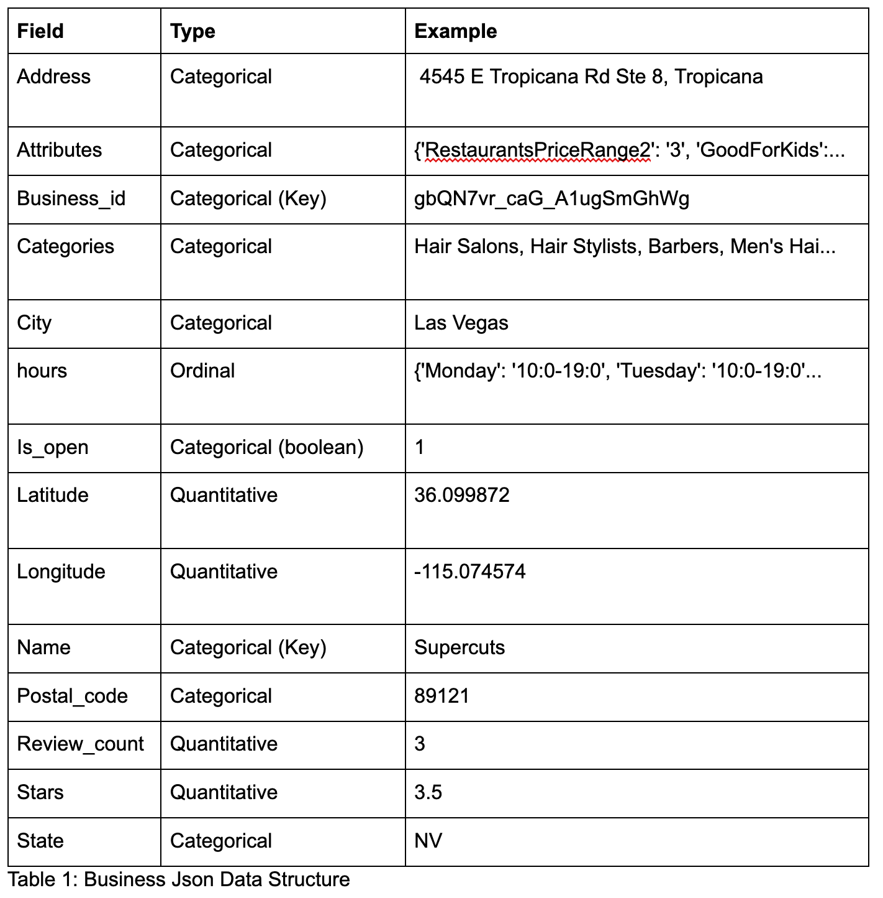
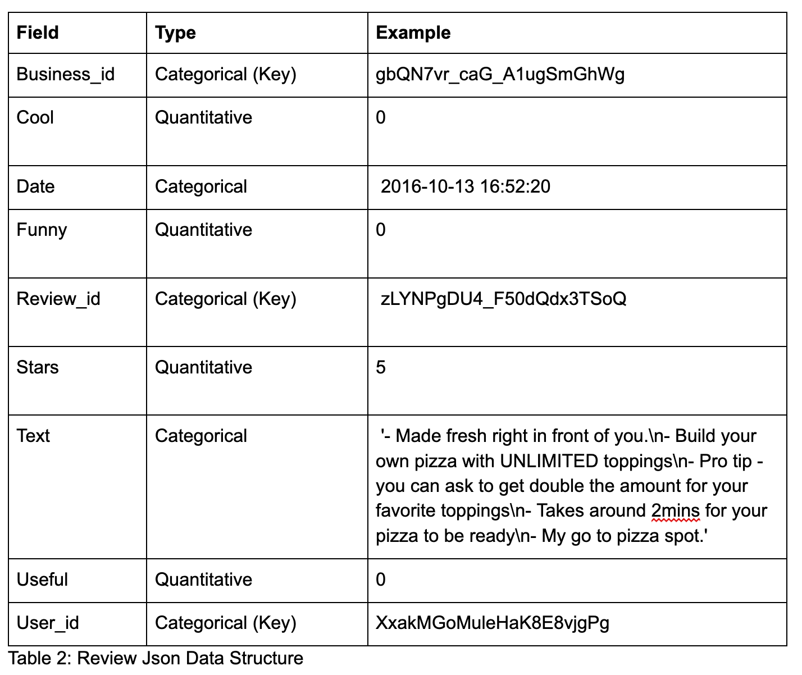

Text Analysis of the Yelp Dataset
Matt D’Intino & Victor Liang DS 5500 April 2019
Motivation:
A restaurateur looking to open a new restaurant or expand an existing restaurant to a new location is faced with the following problem: “what type of restaurant would have the highest success in this location, or what location would make this type of restaurant the most successful?” Using text reviews curated by the website Yelp, this study investigates the effects of location and restaurant type on a reviewer’s rating of a restaurant. The hypothesis being tested is that users in one American city will rate restaurants of a certain type differently than users in another American city, and these ratings are a reasonable indication of the restaurant’s success.
Data Analysis:
This project utilized a dataset cultivated by Yelp and made available on Kaggle (https://www.yelp.com/dataset/documentation/main) to build multiple machine learning algorithms and resulting visualizations. Yelp is a website that allows for users to leave reviews on consumer businesses so that other potential customers have an idea of what he or she might get if they decide to engage with the given business. These reviews involve a text description and a star rating from 1-5. The Yelp dataset contains multiple json files, but only two were used in this study: “business” and “review”. The business file contains information about the businesses themselves. The relevant fields from the business file for this study are ‘city’, which describes the business’ location, and ‘category’, which returns a list of traits that describe the business. An example ‘category’ field is as follows: [‘Sushi Bars’, ‘Restaurants’, ‘Japanese’]. As previously mentioned, the review file contains the actual text of a user review, as well as a star rating on a scale of 1-5, 1 being the worst and 5 being the best. Both the business file and the review file contain a ‘business_id’ field, which allows for joining the reviews with the associated business.
Example records:
Business:

Review:
